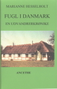

Fugl i Danmark

Køb bogen her for kr 120,-
Send email med bestilling og inkluder navn og
adresse, samt et telefon-nummer til marianne@hesselholt.com
Lektørudtalelse:
Hesselholt, Marianne: Fugl i Danmark: en
udvandrerkrønike. Ancethe. 258 sider.
Første del af romanbiografi, der dels bygger på
de 1000 håndskrevne sider hovedpersonen Hans Christian Fugl
(f.1811) skriver, da han i sin alderdom er tilbage i Danmark, og dels
på anekdoter fra Tandil, en by på den argentinske pampa i
den såkaldte "danskertrekant" af byer i Argentina, hvor der i
dag står en statue af Hans Christian Fugl. En dansker som ikke
forbliver en fremmed fugl i det fremmede, men som fx indfører
dyrkningen af dansk hvede i Argentina. Forfatteren har før
bl.a. skrevet en trilogi om B.S. Ingemann, senest "Dejlig er jorden:
10 kapitler af digterens B.S. Ingemanns liv" fra 2005. Denne
første del af hendes nye serie af romanbiografier beskriver
levende med gode personskildringer Hans Christian Fugls barndom og
ungdom, og giver et godt og historisk tidstypisk indblik i hvordan en
tidlig spirende udlandslængsel måske nærmer sig
virkelighed. Barndommen indledes med en voldsom fødsel, hvor
jordemoder-madammen kommer med denne opfordring: "Den tingest skal I
sætte ud. Nu med det samme!". Sådan en entre til verden
fortjener et liv fuldt ud levet, som jo også Fugls skulle blive
det. I dette første binds sidste kapitel finder Fugl
måske målet for sine drømme om at rejse ud i
verden, da et kort over Sydamerika synes næsten levende: "Og
lå det ikke der og opsugede det sparsomme lys?
"Sølvlandet." Sagde han højt." Vellykket, letlæst
romanbiografi.
Carsten Güllich-Nørby
Doktor Jakobsen så på ham med
øjne, der skinnede, han var langt fra ædru, havde vist
allerede været en smule bedugget, da de løb på
hinanden på Langgade og sammen fulgtes ad til Mackeprangs. Her
havde Jakobsen forlangt vin af bedste årgang og ganske
overhørt Hans' protester. Og nu havde han ladet munden
løbe det sidste kvarter. Og som sædvanligt talt sig hed
om Amerika og de gyldne drømme om et liv i frihed og
rigdom.
"Du er en drømmer, Jakobsen, og jeg
er en almindelig skolelærer i Stege, der har begge ben
på jorden."
"Ja, og inden du ser dig om, så har dine
fødder slået rødder, og du kan ikke rokke dig af
stedet."
Jakobsen havde forleden lånt ham en artikel
fra Berlinske Tidende, skrevet af en kaptajn Wordin-ger, der havde
sejlet på de syv verdenshave og kendte hele verden. Og i
artiklen oprullede forfat-teren et forjættende billede af
Sydamerika. Han forstod ikke, skrev han, hvorfor europæerne
strøm-mede til Nordamerika, hvor klimaet mange steder var
elendigt og jorden gold. I Argentina derimod lå guldet og
ventede på den uendelige pampa. Der var jorden guddommeligt
frugtbar, gødet som den var igennem århundreder af vilde
horder af heste og kvæg. Og klimaet var eventyrligt. Aldrig
kulde og frost. Og der var ingen mennesker. Kun indianere. Og de var
tillidsfulde og fredelige som børn.
"Kan du ikke se det for dig, Fugl. Jorden ligger i
sin jomfruelige uberørthed og byder sig til. Man skulle
være et skarn, om man ikke tog for sig."
"Som du kan sige det!"
"Ja, og sandt for dyden også
føle det. Men du er ufølsom som en sten,
Hans. Hænger uhjælpeligt fast i din puritanske
flovhed uden talent for sanselig nydelse."
Jakobsen fyldte sit glas og drak. Han
smaskede højlydt.
Hans så på ham og rystede
på hovedet.
"Jo du! Jeg kan lige se dig som bonde derovre i
Amerika. Ved du overhovedet, hvad det vil sige at bryde udyrket
jord?"
"Nej, hvorfor skulle jeg også det? Du
tager jo med mig, Hans, og jeg vil således følges med min
broder i ånden, og se, han er mand for at bryde hvad som
helst. Og mens du, Hans, vinder guld af muld, favner jeg min hustru
så huld."
"Det kunne du lide!"
"Ja, og du med, Hans, bild mig ikke et
øjeblik ind, at terperiet på Borgerskolen har din store
inter-esse."
"Jeg har min egen skole nu."
"Og den tjener du penge på?"
"Nej. Men det er min egen."
"I Argentina kan du få din egen
jord. Den er allemandseje derovre. Tænk på det! Du kan
uhindret skabe dit eget paradis, for i Amerika er der ingen
grænser. Den totale frihed venter på dig. Men så
grib den dog, menneske!"
*
Hans havde ikke straks taget sig af vennens snak, for Jakobsen fablede
uophørligt om at forlade andegården Danmark og finde et
land, hvor man kunne leve i frihed og velstand. Men foretog sig i
øvrigt ikke synderligt. Det var alt sammen blot ord. Ord, som
endda kaldte på smilet, for det var vanskeligt at forestille sig
den mageligt anlagte doktor strenge sig an til en sådan
udmattende livsændring. Doktoren var inderligt utilfreds med
Danmark, det var sandt. Men han gik gennem livet med en underlig
skødesløs ligegyldighed, som undrede Hans. Undrede ja,
men som også tiltrak. En fascinationskraft, han ikke ret begreb,
men mærkede som en foruroligende rislen i blodet. Det var
så modsat hans egen praktiske forankring i den virkelighed, der
omgav ham. Jakobsen fejede ubekymret alle forhindringer af vejen, og
når han ret rullede sig ud, var han uimodståelig og kunne
forføre hvem som helst.
*
Langsomt og umærkeligt begyndte der at ske en
forandring i hans holdning til vennens tågede
fantasiforestillinger. Og sære billeder, som han ikke havde
kaldt på, begyndte at vise sig for hans indre. De trængte
sig på, invaderede hans drømme og fyldte ham med en
sugende længsel, som han længe ikke ret ville vedkende
sig. Forunderlige panoramaer af udstrakte vidder, af bissende
kvæg, af ædle, galoperende vildheste og
farvestrålende indianere foldede sig ud. Som pirrende
muligheder, og som eventyr. Han forsøgte at tale sig selv til
fornuft. Det var urealistiske glansbilleder. De rene
drengedrømme. Og han var voksen.
Men han begyndte at besøge
Jakobsens stadig oftere. Og lidt efter lidt blev han
lydhør.
"Jamen, er det dit fulde alvor?" spurgte
han en dag.
"Jeg kan ikke være alvorlig, mener du?"
"Jeg ved snart ikke. Og desuden: en
sådan lang rejse er måske en mulighed for dig, men ikke
for mig. Hvor skulle jeg f.eks. få midlerne fra? Jeg måtte
tigge mig til mine studier, det ved du vel? Og de penge har jeg endnu
knap kunnet betale tilbage."
"Tig du bare videre. Der findes altid glade
givere."
Jakobsen slog ud med hånden, som var han en
af dem.
"Men hvad med dig selv? Så vidt jeg ved,
lever du af din praksis, og den går vel ikke ligefrem
glimrende."
"Blæse være med min praksis,"
brød vennen irriteret af. "Den sælger vi."
"Vi?"
"Sagde jeg ikke nylig, at du var min
bror. Vi deler naturligvis."
"Det kan jeg ikke tage imod."
"Det kan du sagtens. Husk på, at du skal
arbejde for to derovre i Amerika. Snart vil du blive
hovedrig. Så kan du betale mig tilbage."
"Mener du det?"
"Hvorfor tror du mig aldrig?"
Ja, hvorfor mon? grundede han, men sagde
ingenting.
De sad i vennens smukke dagligstue. Fornemme og
fint udskårne møbler med smukt porcelæn og
ciselerede glasskåle på de blanke borde, og på
væggene hang malerier af grønne marker og græssende
kvæg, af stolte skonnerter med hvide skumsprøjt for
boven, duvende i vinden for blakkede sejl. Et glansbillede, når
alt kom til alt, men alligevel af en ganske anderledes storhed end
barndommens glinsende drømmeforestillinger. Væggen over
for det store stuevindue prydedes af et portræt, som Jakobsen
havde ladet male af den lille Signepige, som han kaldte sin kone. Hans
så på det. En solstråle fangede pigens forsigtige
smil. Han følte et stik i hjertet. Signe. Hun syntes så
sårbar, som hun hang der, bleg og fin og lod sig
besole. Vrøvl, tænkte han irriteret og vendte atter
blikket mod doktoren.
Men de billeder måtte have kostet
dyrt. Måske var Jakobsen i virkeligheden velhavende. Han ville
sikkert blive det, om han solgte det store hus med hele det pragtfulde
indbo.
Da han lidt senere forlod vennen, var han for
første gang i tvivl. Måske skulle han alligevel rejse,
måske kunne det virkelig lykkes ham at skabe sig et ganske andet
liv langt borte. Et liv uden tvang? Svimmel ved tanken fortsatte han
ned gennem den smukke have, der bredte sig foran ham som et
miniparadis af blomstrende skønhed. Sådan en have kunne
jeg selv få, tænkte han og standsede fortumlet midt
på plænen.
Han stod stille en tid og kiggede ned over det
grønne græs, der lyste i solskinnet. Og der borte, i
halvskygge under et blomstrende æbletræ lå Signe i
en havestol. Hun sov vist. I hendes skød lyste en opslået
bogs hvide sider.
Han blev hed og vendte blikket fra hende.
Langsomt fortsatte han sin gang mod
havelågen. Passerede to kønne, lyskrøllede
smådrenge. De lå på ryggen og legede med
skyformationerne højt over dem. Han hørte den mindste
sige: "Se den lange der, den har hale på."
"Ja," kom det sindigt fra den større, "men
jeg tænker nu snarere, at det er en kost, og se, nu fejer den
hen over hele himlen, så den bliver blå og ren."
"Eller måske er det en slange, der kryber
over himmelbuen og æder alle de andre skyvæsner op."
De klukkede henrykte.
Næsten nede ved lågen vendte han sig
brat om og bevægede sig søvngængeragtigt hen mod
den unge kvinde. Længe blev han stående foran hende, mens
han lod blikket hvile på den spinkle skikkelse. Sollysets
urolige lysflimmer trængte ned gennem løvet og faldt som
sarte kærtegn på hendes nøgne ansigt og hals og gav
den blege hud et fortryllende skær. Lyden af den perlende
barnelatter og synet af kvinden flød sammen og tændte en
glæde i ham.
Måske fandtes der en vej?